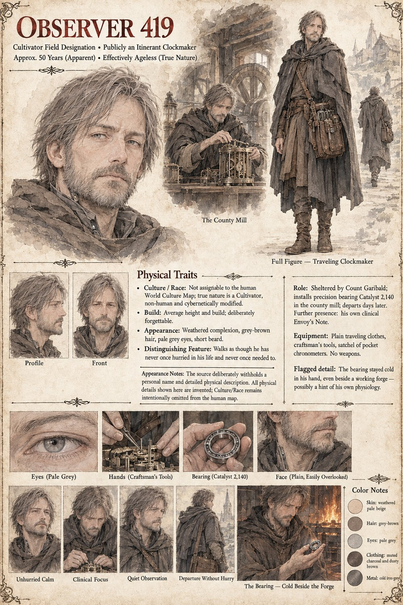

Observer 419
Envoy/Observer, Case 2,140 · publicly an itinerant clockmaker
A field agent of the Cultivators, deployed to Vardane disguised as a traveling clockmaker with nothing more remarkable about him than a satchel of pocket chronometers. Count Garibald shelters him for a night's lodging before asking a single question about his business — a courtesy no prior posting has required of him, and which his own field note admits, against protocol, he was not required to find noteworthy, and did. He replaces one worn axle joint with a single dull grey sphere, refuses every offer of help, and leaves three days later on foot, forgotten the way useful strangers generally are. The wheel is not.
“Introduce. Observe. Withdraw before attachment becomes measurable.”
Appears in The Third Grain